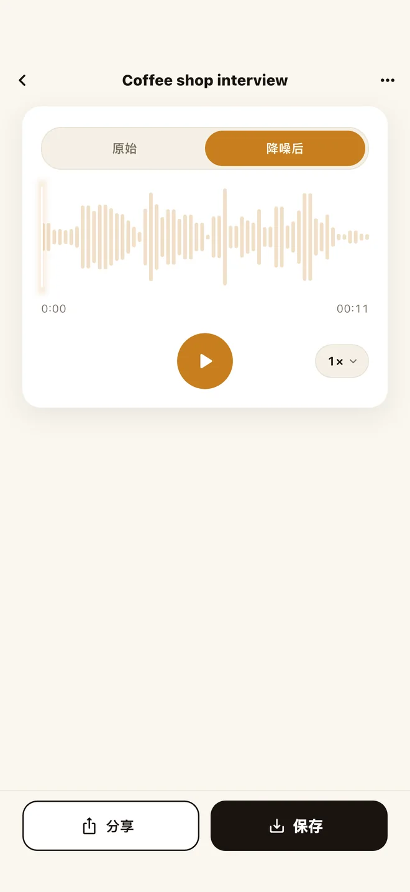

一览
大多数人最想先知道的四件事。每一项细节及其来源，都在下面的完整对比表中。
| App | 不上传 | 无需账号 | 可离线使用 | 免费保存 |
|---|---|---|---|---|
| NoisyNo | ✓是 | ✓是 | ✓是 | ✓是 |
| Denoise | ✓是 | –未说明 | –未说明 | 需付费 |
| Denoise.FX | ✓是 | –未说明 | ✓是 | –未说明 |
| Audio Cleaner | ✓是 | –未说明 | –未说明 | –未说明 |
| PureVoice | ✓是 | –未说明 | ✓是 | 标称免费 |
| NoiseKill | ✓是 | ✓是 | ✓是 | 含广告 |
| Offline AI Video Noise Remover | ✓是 | ✓是 | ✓是 | 每天 2 次 |
| Adobe Podcast | ✗否 | ✗否 | ✗否 | 每天 1 小时 |
| LALAL.AI | ✗否 | ✗否 | 手机端不支持 | 仅可预览 |
✓ 是 · ✗ 否 · – 厂商未说明
完整对比表
同样的九款 App，附上每个答案背后的细节。前七款在手机上降噪，后两款是云端服务。价格为美国 App Store、Google Play 或厂商官网价格；厂商没有说明的地方，表格中写未说明。
左右滑动表格可查看所有列 →
各降噪 App 的厂商官方说明，核查于 2026 年 11 月 26 日。上标数字链接到来源。
| App | 是否把音频上传到服务器？ | 是否需要账号？ | 价格模式 | 平台 | 免费内容 / 导出限制 | 能否离线使用？ | 能否处理视频？ |
|---|---|---|---|---|---|---|---|
| 在设备上降噪 | |||||||
| NoisyNoGrayForge（本站） | 否。文件在设备上处理；有限的诊断数据不包含文件名或音频。12 | 否。13 | 免费下载；降噪免费，不限时长。Pro：一次性购买，没有订阅：iPhone、iPad 和安卓上为 $5.99；Mac 版 $7.99，需单独购买。23 | iPhone、iPad（iOS 15+）、Mac（macOS 13.4+）、安卓234 | 降噪后的音频保存为 M4A（AAC），免费，不限时长。无损 WAV、降噪后的视频、批量处理、响度标准化和裁剪需要 Pro。12 | 能，安装后即可。13 | 能。免费版保存降噪后的音频；Pro 可把片段作为视频导出，只替换其中的声音。2 |
| Denoise: AI Noise RemoverRoutes Software SRL | 否。商店页面称不上传任何内容。5 | 未说明5 | 免费下载。3 次导出 $1.99，或 Denoise Pro：终身版 $14.99，或按月订阅。5 | iPhone、iPad（iOS 17+）、Apple 芯片 Mac5 | 清理和试听免费。保存或分享需要 Pro 或导出包。可导出 M4A、WAV 或视频。5 | 未说明；所有处理都在设备上运行。5 | 能。5 |
| Denoise.FX for Audio & VideoAndrey Ivankin | 否。在设备上处理。6 | 未说明6 | 免费下载。高级项目：按周（$3.99 或 $4.99）、“Early”（$29.99 或 $39.99）和终身版（$39.99 或 $49.99）。6 | iPhone（iOS 15+）、Apple 芯片 Mac6 | 未说明哪些免费。音频可按所选格式保存，视频可存回“照片”。6 | 能；无需联网。6 | 能。6 |
| Audio Cleaner: AI DenoiseKnotSmith Ltd. | 否。降噪在 iPhone 本地运行。7 | 未说明7 | 免费下载。Premium：每周 $3.99、每年 $9.99 或终身 $19.99，另有 $2.99 至 $7.99 不等的其他 Premium 项目。7 | iPhone（iOS 18+）、Apple 芯片 Mac7 | 未说明哪些免费。可导出 MP3、WAV、AAC、M4A，以及 MP4 或 MOV 视频。7 | 未说明；处理在设备上运行。7 | 能。7 |
| Noise Reducer, PureVoiceOWLMYST | 否。商店页面称音频从不离开设备。89 | 未说明89 | 免费下载。商店页面称所有功能免费；App Store 上另有 $19.99 的 Lifetime（终身）购买项。89 | iPhone（iOS 15.6+）、Apple 芯片 Mac、安卓89 | 声称处理时长不限。支持 MP3、WAV、M4A。未说明 Lifetime 解锁什么。89 | 能。89 | 未说明89 |
| NoiseKill: AI Noise RemoverShahLabs | 否。商店页面称不向服务器发送任何内容。10 | 否。10 | 免费，靠广告支持。未列出内购项目。10 | 安卓手机、平板、Chromebook、Android TV10 | 免费，无水印。降噪后的文件保存到图库。10 | 能。10 | 能；支持 MP4、MOV、MKV。10 |
| Offline AI Video Noise RemoverAreeb Labs | 否。该 App 没有联网权限。11 | 否。11 | 免费。Pro：一次性购买，没有订阅。11 | 安卓11 | 免费版：每天保存 2 次，完整时长，无水印。Pro：不限保存次数。输出 MP4 视频、M4A 音频。11 | 能。11 | 能；画面原样复制，不做改动。11 |
| 在云端降噪 | |||||||
| Adobe Podcast Enhance SpeechAdobe，网页应用 | 是。你需要把文件上传到网页应用。12 | 是；免费版从注册开始。12 | 有免费版。Firefly Pro 方案（含 Adobe Podcast Premium）：限时优惠前 6 个月每月 $9.99，优惠于 12 月 6 日结束。12 | 网页浏览器12 | 免费版：仅限音频，一次一个文件，最长 30 分钟、最大 500 MB，每天 1 小时。付费版：单文件最长 2 小时、最大 1 GB，每天 4 小时。12 | 不能；它在网页上运行。12 | 仅付费版（MP4、MOV 等）12 |
| LALAL.AI Voice Cleanerlalal.ai | 是。其手机 App 称所有处理都在 LALAL.AI 的云服务器上进行。131415 | 是。1314 | 免费 Starter（10 分钟）。Lite 每年 $90，Pro 每年 $180。一次性充值 $50 起。16 | iPhone、iPad、安卓、网页、桌面端131416 | 免费版仅可预览；下载完整结果需要付费方案。文件大小免费版最大 200 MB，付费版最大 2 GB。1316 | iPhone 和安卓上不能。1314 | 网页版能：MP4、MOV、MKV、AVI、M4V。15 |
商店页面经常变动。App 隐私标签和“数据安全”部分由开发者自行填写；Apple 也说明其标签未经验证。
我们如何核查
NoisyNo 是 GrayForge 开发的，阅读本页时请把这一点考虑在内。关于其他 App 的每一条信息，都来自它们自己的美国 App Store 或 Google Play 页面，或厂商官网，于 2026 年 11 月 26 日查阅；没有任何内容来自评测网站或用户评论。我们没有用同一段录音测试每一款 App，所以本页不按降噪效果的好坏给它们排名。这里的每款 App 都可以免费下载或试用，你可以自己听听差别。
NoisyNo 免费版与 Pro
降噪免费，不限时长，无需账号，降噪后的音频保存为 M4A（AAC）。Pro 是一次性购买，没有订阅：iPhone、iPad 和安卓上为 $5.99，Mac 版为 $7.99，需单独购买。23



Pro 增加导出降噪后的视频、16 位无损 WAV、批量处理、按有声书（−18 LUFS）、播客（−16 LUFS）或视频与流媒体（−14 LUFS）目标进行响度标准化，以及降噪前裁剪。2
表格没有体现的内容
- NoisyNo 去除的是人声下面那层持续的噪音（嗡嗡声、嘶嘶声、风扇、空调、风噪、房间底噪、车流声），针对人声优化，不适用于音乐。在这里的本地降噪 App 中，只有 NoisyNo 和 PureVoice 同时上架 App Store 和 Google Play。12本地降噪教程介绍了完整流程。
- Denoise 的功能最丰富：它还能减少房间回声、均衡音量、边录边降噪、编辑、缩短长停顿、分离人声与音乐，并出售转写时长。5
- Denoise.FX 是这里的本地降噪 iPhone App 中评分数量最多的（435 个美国评分，4.5 星）。你可以手动调节算法、添加频率滤波器；它的隐私标签将购买记录和用户 ID 列为与你关联的数据。6
- Audio Cleaner 有强度调节和前后对比，还有 EQ、效果和预设，并可通过 Wi-Fi 从电脑传入文件。7
- PureVoice 在两个商店中都表示不收集任何数据，但两个页面的最后更新时间都是 2025 年 8 月。89
- NoiseKill 在清理整个文件前会先播放一小段 A/B 预览，提供 Gentle、Balanced 和 Strong（轻度、均衡、强力）三档设置。这是个小众 App，下载量 100+。10
- Offline AI Video Noise Remover 在播放时可以按住来听原声，还有针对小声说话的人声增强。它是个新 App：当前版本就是首个版本。11
- Adobe Podcast 的付费层级随 Adobe 的 Firefly Pro 方案提供，增加视频、批量上传和强度设置。我们的语音备忘录对比把它和 Kapwing 放在一起做了介绍。12
- LALAL.AI Voice Cleaner 还能去除背景音乐、麦克风低频隆隆声和喷麦声，并有 De-Echo（去回声）设置。15
同样值得一看：Auphonic，一款面向播客创作者的网页服务，可降低噪音和混响，每月免费 2 小时（带片头提示音）1718；iPhone 上的 Audio Noise Remover & Reducer，免费，标签为“未收集数据”，但仅支持 iOS 2619；安卓上的 Noise Reducer: Clean Audio，完全不申请任何权限20，以及 NoiseFix21。在 iPhone 上，“语音备忘录”App 自带的“增强录音”开关，我们在语音备忘录“增强录音”vs NoisyNo 一文中做了介绍。
什么情况用哪个
- 你想免费得到一个可以保存或发送的降噪文件。NoisyNo 无需付费即可保存降噪后的 M4A 音频，不限时长。在安卓上，NoiseKill（含广告）和 Offline AI Video Noise Remover（每天保存两次）也是免费的。
- 人声在视频里，而你需要拿回视频。在安卓上，NoiseKill 和 Offline AI Video Noise Remover 可以免费保存视频。在 iPhone 上，Denoise 购买后可保存视频，NoisyNo 则需要 Pro；Denoise.FX 和 Audio Cleaner 也能保存视频，但没有说明哪些免费。
- 你除了降噪还想编辑。Denoise 能录音、裁剪、合并、缩短停顿和转写；Audio Cleaner 增加了 EQ 和预设。
- 你同时使用 iPhone 和安卓手机，或者用 Mac。NoisyNo 三个平台都支持；PureVoice 也上架了两个商店，但自 2025 年 8 月以来没有更新。
- 录音内容需要保密，比如会议、采访或就医记录：任何一款本地降噪 App 都能让它远离其他公司的服务器。详见清理会议录音。
- 你在一台无法安装 App 的电脑上，而且片段并不敏感：在浏览器中使用 Adobe Podcast 或 LALAL.AI。要做好注册、上传和免费版限制的准备。
自己验证“离线”说法
商店页面是卖 App 的人写的，我们的也不例外。花两分钟，你就能了解更多：
- 打开飞行模式并关闭 Wi-Fi，然后清理一段短录音。如果能完成，说明处理是在你的手机上进行的。
- 处理前出现登录界面，意味着你的文件与账号相关联。阅读隐私政策，了解文件会被如何处理。
- 阅读隐私部分（App Store 的“App 隐私”、Google Play 的“数据安全”），同时记住两者都是由开发者自行填写的。
根本没录进去的噪音，事后也就不需要去除。远离风扇和空调，让手机离说话的人更近；在 iPhone 上，录音时可以试试“语音突显”。
常见问题
哪些降噪 App 可以离线使用？
iPhone 上的 NoisyNo、Denoise.FX 和 PureVoice，以及安卓上的 NoisyNo、NoiseKill、Offline AI Video Noise Remover 和 PureVoice，都表示无需联网即可清理录音。Denoise 和 Audio Cleaner 称所有处理都在设备上运行，但没有使用“离线”一词。Adobe Podcast 和 LALAL.AI 的手机 App 在自己的服务器上处理文件。
有没有没有水印、不限保存次数的免费降噪 App？
NoisyNo 无需账号即可免费把降噪后的音频保存为 M4A，不限时长。在安卓上，NoiseKill 免费、含广告、无水印，Offline AI Video Noise Remover 每天可免费保存两个文件。Denoise 保存需要付费，Adobe Podcast 免费版每天可处理 1 小时音频，LALAL.AI 免费版只能预览结果。
Adobe Podcast 和 LALAL.AI 会上传我的录音吗？
会。Adobe Podcast Enhance Speech 处理的是你注册后上传的文件；LALAL.AI 的 iOS 和安卓页面称所有处理都在其云服务器上进行，并且需要账号。
NoisyNo 免费吗？
是的。降噪免费且不限时长，保存为 M4A，无需账号。Pro 是一次性购买，iPhone、iPad 和安卓上为 $5.99，Mac 版为 $7.99，增加视频导出、WAV、批量处理、响度标准化和裁剪功能。
来源
所有页面均于 2026 年 11 月 26 日查阅。价格为当天这些页面显示的美国价格。
- NoisyNo product page (GrayForge) · https://grayforge.app/noisyno/设备端处理、无需账号、安装后可离线使用、支持格式、Pro 功能、没有订阅、支持平台。核查于 2026-11-26。
- GrayForge llms.txt, NoisyNo section · https://grayforge.app/llms.txt能去除哪些噪音、针对人声而非音乐、输入和输出格式、有无 Pro 时的视频处理、Pro 功能与一次性价格、Mac 版 Pro 单独购买。核查于 2026-11-26。
- NoisyNo: Voice Noise Remover, App Store (US) · https://apps.apple.com/us/app/id6772728543App 内购买项目（NoisyNo Pro $5.99，Mac 版 $7.99），iOS 15、iPadOS 15 和 macOS 13.4 的系统要求，不上传、无需账号。核查于 2026-11-26。
- NoisyNo: Voice Noise Remover, Google Play (US) · https://play.google.com/store/apps/details?id=com.grayforge.noisyno安卓版页面，设备端模型，不使用云端、无需账号。核查于 2026-11-26。
- Denoise: AI Noise Remover, App Store (US) · https://apps.apple.com/us/app/id946423200不上传任何内容、在设备上运行、免费清理和试听、保存需 Pro 或导出包、App 内购买价格、M4A/WAV/视频导出、编辑和转写功能、兼容性。核查于 2026-11-26。
- Denoise.FX for Audio & Video, App Store (US) · https://apps.apple.com/us/app/id1623119654设备端处理且无需联网、App 内购买价格、视频支持、3.0 版本的模式、兼容性、评分、App 隐私标签。核查于 2026-11-26。
- Audio Cleaner: AI Denoise, App Store (US) · https://apps.apple.com/us/app/id6751505212降噪在本地运行、App 内购买价格、导出格式、视频支持、EQ 与预设、iOS 18 系统要求。核查于 2026-11-26。
- Noise Reducer, PureVoice, App Store (US) · https://apps.apple.com/us/app/id6748527663离线、不上传、Lifetime $19.99、“所有功能免费”的说法、MP3/WAV/M4A、兼容性、“未收集数据”标签、最后更新于 2025 年 8 月。核查于 2026-11-26。
- Noise Reducer, PureVoice, Google Play (US) · https://play.google.com/store/apps/details?id=com.owlmyst.ai.purvoice离线、不上传、含内购、不收集数据、更新于 2025 年 8 月 27 日。核查于 2026-11-26。
- NoiseKill: AI Noise Remover, Google Play (US) · https://play.google.com/store/apps/details?id=com.mcore.noisekill设备端处理、无需联网、无需账号、无水印、含广告、视频和音频格式、支持的设备、“数据安全”部分。核查于 2026-11-26。
- Offline AI Video Noise Remover, Google Play (US) · https://play.google.com/store/apps/details?id=com.areeblabs.noiseremover无联网权限、无需注册、免费（每天保存 2 次）与一次性 Pro、MP4 和 M4A 输出、首个版本。核查于 2026-11-26。
- Adobe Podcast plans · https://podcast.adobe.com/en/plansEnhance Speech 免费版与 Firefly Pro 方案的限制、注册、一次上传一个文件、付费版支持视频、前 6 个月每月 $9.99 的优惠（12 月 6 日结束）。核查于 2026-11-26。
- LALAL.AI for iOS · https://www.lalal.ai/ios-app/处理在 LALAL.AI 的云服务器上进行、需要联网和账号、免费版仅可预览、支持 iPhone 和 iPad。核查于 2026-11-26。
- LALAL.AI for Android · https://www.lalal.ai/android-app/处理在 LALAL.AI 的云服务器上进行、需要联网和账号、可去除噪音和背景音乐。核查于 2026-11-26。
- LALAL.AI Voice Cleaner · https://www.lalal.ai/voice-cleaner/在线服务、需要上传、可去除的内容、De-Echo 设置、视频格式。核查于 2026-11-26。
- LALAL.AI pricing · https://www.lalal.ai/pricing/Starter、Lite 和 Pro 方案，上传大小限制，一次性充值。核查于 2026-11-26。
- Auphonic pricing · https://auphonic.com/pricing每月免费 2 小时（带片头提示音）、按年付费的循环额度每月 $11 起、一次性额度 5 小时 $12 起、所有方案均含降噪和混响消除。核查于 2026-11-26。
- Auphonic help, Production · https://auphonic.com/help/web/production.html可在浏览器中上传、通过链接或从外部服务导入；音频文件只保存有限的天数；降噪和混响设置。核查于 2026-11-26。
- Audio Noise Remover & Reducer, App Store (US) · https://apps.apple.com/us/app/id6782887119免费、无需账号、不访问网络、支持视频和音频、“未收集数据”标签、iOS 26 系统要求。核查于 2026-11-26。
- Noise Reducer: Clean Audio, Google Play (US) · https://play.google.com/store/apps/details?id=noise.reducer内置模型、无需账号、不申请权限、无广告、WAV 输出、仅处理持续噪音、不支持批量。核查于 2026-11-26。
- NoiseFix: offline AI Denoiser, Google Play (US) · https://play.google.com/store/apps/details?id=io.cyberfly.noisefix离线、无需账号、可选一次性购买、针对人声而非音乐、不收集数据。核查于 2026-11-26。
NoisyNo — Voice Noise Remover
在你的设备上去除语音录音和视频音频中的嗡嗡声、嘶嘶声、风扇声、风噪和房间底噪。无需上传，无需账号，降噪免费且不限时长。
告诉我们，我们会更正表格。
商店页面会变化。如果上面的某个价格、平台或限制已经过时（包括关于 NoisyNo 的内容），请附上链接发邮件告诉我们，我们会更正表格。
grayforge.dev@gmail.com